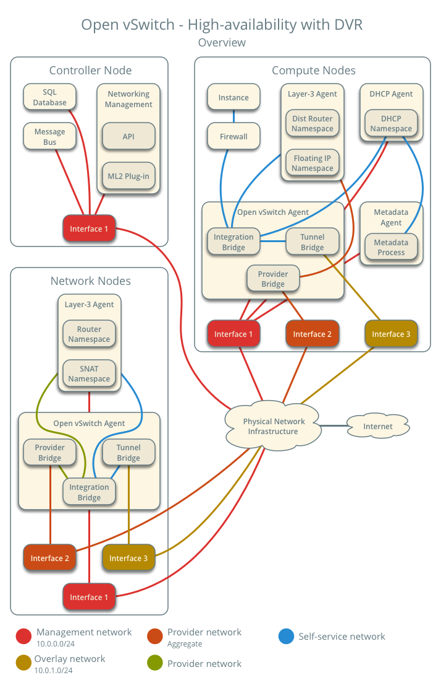

Open vSwitch: High availability using DVR
此体系结构示例使用分布式虚拟路由器（DVR）高可用性机制扩充了自助部署示例，该机制在计算节点上提供自助服务和提供商网络之间的连接，而不是针对特定方案的网络节点。 对于具有浮动IPv4地址的实例，自助服务和提供商网络之间的路由完全驻留在计算节点上，以消除网络节点的单点故障和性能问题。 对于具有固定或浮动IPv4地址的实例，路由也完全驻留在计算节点上，使用同一分布式虚拟路由器上的自助服务网络。 但是，具有固定IP地址的实例仍依赖于网络节点在自助服务和提供商网络之间进行路由和SNAT服务。
请考虑此高可用性机制的以下属性，以确定您的环境中的实用性：
- 仅当实例驻留在具有浮动IPv4地址的self-service network上时，才通过实例所在的计算节点提供与实例的连接。仅具有IPv6地址或IPv4和IPv6地址的自助服务网络上的实例依赖于网络节点进行IPv6连接。
- 每个计算节点上的路由器实例在其包含网关的provider network上使用IPv4地址。
先决条件
使用以下组件修改计算节点：
- 安装OpenStack Networking layer-3 agent。
架构

下图显示了一个self-service network和一个未标记（平面）网络的组件和连接。在此特定情况下，实例与网络的DHCP代理驻留在同一计算节点上。如果DHCP代理驻留在另一个计算节点上，则后者仅包含具有OVS集成桥上端口的DHCP命名空间。

Network traffic flow
以下部分描述了几种常见方案中的网络流量流。南北网络流量在实例和外部网络（如Internet）之间传输。东西向网络流量在相同或不同网络上的实例之间传输。在所有情况下，物理网络基础设施处理提供商网络和外部网络（例如因特网）之间的交换和路由。每种情况都引用一个或多个以下组件：
- Provider network (VLAN)
- VLAN ID 101 (tagged)
- Self-service network 1 (VXLAN)
- VXLAN ID (VNI) 101
- Self-service network 2 (VXLAN)
- VXLAN ID (VNI) 102
- Self-service router
- Gateway on the provider network
- Interface on self-service network 1
- Interface on self-service network 2
- Instance 1
- Instance 2
North-south scenario 1: Instance with a fixed IP address
除了网络节点上的路由器命名空间成为SNAT命名空间。 网络节点仍然包含路由器命名空间，但在这种情况下它没有用处。
计算节点的步骤：
- 实例接口（1）通过veth对将数据包转发到安全组网桥实例端口（2）。
- 安全组网桥上的安全组规则（3）处理数据包的防火墙和连接跟踪。
- 安全组网桥OVS端口（4）通过veth对将数据包转发到OVS集成网桥安全组端口（5）。
- OVS集成网桥为数据包添加内部VLAN标记。
- OVS集成网桥为内部隧道ID交换内部VLAN标记。
- OVS集成网桥补丁端口[patch port]（6）将数据包转发到OVS隧道网桥补丁端口[patch port]（7）。
- OVS隧道网桥（8）使用VNI 101打包分组。
- 用于覆盖网络[overlay networks]的底层物理接口（9）经由覆盖网络[overlay networks]（10）将分组转发到网络节点。
网络节点步骤：
覆盖网络[overlay networks]的底层物理接口（11）将分组转发到OVS隧道网桥（12）。
OVS隧道网桥解包并为其添加内部隧道ID。
OVS隧道网桥为内部VLAN标记交换内部隧道ID。
OVS隧道网桥补丁端口[patch port]（13）将数据包转发到OVS集成网桥补丁端口[patch port]（14）。
用于自助服务网络[self-service network]（15）的OVS集成网桥端口移除内部VLAN标记并将该分组转发到SNAT命名空间中的自助服务网络[self-service network]接口（16）。
SNAT将数据包转发到提供商网络[provider network]的OVS集成网桥端口（18）
OVS集成网桥将内部VLAN标记添加到数据包。
OVS集成网桥接器int-br-provider补丁端口[patch port]（19）将分组转发到OVS rovider bridge的phy-br-provider补丁端口[patch port]（20）。
OVS provider bridge将内部VLAN标记与实际VLAN标记101交换。
OVS provider bridge网络端口（21）将分组转发到物理网络接口（22）。
物理网络接口通过物理网络基础设施将数据包转发到Internet（23）。
North-south scenario 2: Instance with a floating IPv4 address
对于在分布式路由器上使用自助服务网络[self-service network]的浮动IPv4地址的实例，包含该实例的计算节点在从实例传递到外部网络（例如因特网和南北流量的DNAT）的南北流量上执行SNAT从外部网络到实例。浮动IP地址和NAT不适用于IPv6。因此，网络节点在此方案中路由IPv6流量。实例与外部网络（如Internet）之间传递的南北流量。
- 实例1驻留在计算节点1上并使用自助服务网络[self-service network]1。
- Internet上的主机将数据包发送到实例。

计算节点步骤：
- 物理网络基础设施[physical network infrastructure]（1）将分组转发到provider物理网络接口[physical network interface]（2）。
- provider物理网络接口[physical network interface]将数据包转发到OVS provider bridge provider network port（3）。
- OVS provider bridge将实际VLAN标记101与内部VLAN标记交换。
- OVS provider bridge phy-br-provider port（4）将数据包转发到OVS integration bridge int-br-provider port（5）。
- provider network（6）的OVS integration bridge port删除内部VLAN标记，并将数据包转发到浮动IP名称空间中的provider network interface（7）。此接口响应实例浮动IPv4地址的任何ARP请求。
- 浮动IP命名空间使用DVR内部网络上的一对IP地址将分组（8）路由到分布式路由器命名空间（9）。此命名空间包含实例浮动IPv4地址。
- 路由器在数据包上执行DNAT，通过自助服务网络接口[self-service network interface]（10）将目标IP地址更改为自助服务网络[self-service network]上的实例IP地址。
- 路由器将数据包转发到自助服务网络[ self-service network]的OVS集成网桥端口（11）。
- OVS集成网桥为数据包添加内部VLAN标记。
- OVS集成网桥从数据包中删除内部VLAN标记。
- OVS集成网桥安全组端口（12）通过veth对将数据包转发到安全组网桥OVS端口（13）。
- 安全组网桥上的安全组规则（14）处理数据包的防火墙和连接跟踪。
- 安全组网桥实例端口（15）通过veth对将数据包转发到实例接口（16）。
East-west scenario 1: Instances on different networks on the same router
在同一计算节点上具有固定IPv4/IPv6地址或浮动IPv4地址的实例通过计算节点上的路由器进行通信。不同计算节点上的实例通过每个计算节点上的路由器实例进行通信。

计算节点1步骤：
- 实例接口（1）通过veth对将数据包转发到安全组网桥实例端口（2）。
- 安全组网桥上的安全组规则（3）处理数据包的防火墙和连接跟踪。
- 安全组网桥OVS端口（4）通过veth对将数据包转发到OVS集成网桥安全组端口（5）。
- OVS集成网桥为数据包添加内部VLAN标记。
- 用于自助服务网络[self-service network]1（6）的OVS集成桥接端口移除内部VLAN标记并将分组转发到分布式路由器命名空间中的自助服务网络[self-service network]1接口（6）。
- 分布式路由器命名空间（8）将分组路由到自助服务网络[self-service network]2。
- 分布式路由器命名空间（8）中的自助服务网络[self-service network]2接口将分组转发到用于自助服务网络[self-service network]2（9）的OVS集成网桥端口。
- OVS集成网桥为数据包添加内部VLAN标记。
- OVS集成网桥为内部隧道ID交换内部VLAN标记。
- OVS集成网桥patch-tun端口（10）将数据包转发到OVS隧道网桥patch-int端口（11）。
- OVS隧道网桥（12）使用VNI 101包裹分组。
- 用于覆盖网络[overlay networks]的底层物理接口（13）经由覆盖网络[overlay networks]（14）将分组转发到计算节点2。
计算节点2步骤：
- 覆盖网络[overlay networks]的底层物理接口（15）将分组转发到OVS隧道网桥（16）。
- OVS隧道网桥解包并为其添加内部隧道ID。
- OVS隧道网桥为内部VLAN标记交换内部隧道ID。
- OVS隧道网桥patch-int补丁端口[patch port]（17）将数据包转发到OVS集成网桥patch-tun补丁端口[patch port]（18）。
- OVS集成网桥从数据包中删除内部VLAN标记。
- OVS集成网桥安全组端口（19）通过veth对将数据包转发到安全组网桥OVS端口（20）。
- 安全组网桥上的安全组规则（21）处理数据包的防火墙和连接跟踪。
- 安全组网桥实例端口（22）通过veth对将数据包转发到实例2接口（23）。